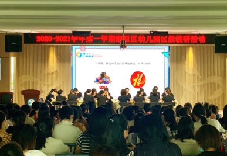
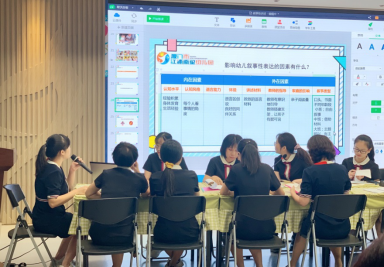
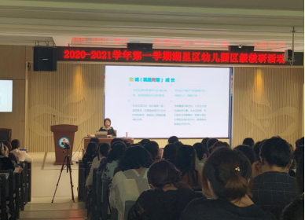
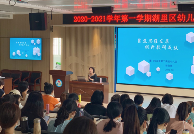

展教研风采 话思维发展 ------2020-2021学年第一学期海淀区幼儿园区级教研纪实
2020年10月20日上午，2020-2021学年第一学期海淀区幼儿园区级教研在湖里实验小学教育集团附小校区三楼召开。海淀区园本教研指导小组全体成员、海淀区公办园园长、业务副园长、教导主任、民办区级示范性、普惠性一级园园长等参加了此次教研，活动由幼教教研员邱爱琴老师主持。
北京市江浦南里幼儿园结合园所办园特色及开学一段时间来，幼儿在语言区游戏中普遍存在讲述不连贯、不完整、缺乏逻辑性等问题，选择《有效支持幼儿叙事性讲述的策略》作为现场园本教研内容。现场教研在主持人熊静雯老师的引领下探寻影响幼儿叙事性讲述的因素，了解叙事性讲述对幼儿的重要作用，从而提升教师有效支持幼儿叙事性讲述的支持性策略。
现场教研后，北京市湖里第二实验幼儿园的曾淑娥园长代表区园本教研指导小组作了点评：一是教研主题聚焦，环节紧凑流畅，环环相扣，较好地体现内在联结；二是主持人善于倾听、回应教师，智慧引领教研逐步深入；三是教研氛围好，教师积极思辨，体现民主和谐的团队文化。同时，也希望江浦南里幼儿园老师们进一步提高思维链接，开放思维模式，用思维型的教研推动教育行为的再提升。


结合各园在教研过程中普遍存在思维不聚焦的问题，湖里区第二实验幼儿园的曾淑娥园长为大家作了《聚焦思维发展 提升教研成效》的讲座。首先，曾园长运用图文的方式解读“思维像什么”，化抽象为具体；接着，通过梳理思维发展与幼儿教师、与幼儿园教育的关系，指出幼儿教师应打破思维“垄断”，学会用思维架构知识，增加思维的多样性。讲座中，曾园长结合本区的教研案例详尽阐述如何运用战略性思维、专业性思维、卓越思维的思维意识设计教研方案、如何充分利用教研形式与策略培养教研审辩思维、如何在教研方案撰写上体现思维的严谨性、完整性和连贯性，具有很强的实践和借鉴意义。


区进修校幼教教研员黄淑真老师也在本次活动中对各园的教研工作提出了指导意见，建议各园要厘清思路，基于幼儿学习与发展的内涵开展研讨，提升教研品质；关注教师的不同学习方式，因师施教，有效引领教师践行“以学为中心”的教育理念，不断提升教师观察分析幼儿行为的能力，深化游戏课程的品质。
本次半日区级教研活动安排紧凑，信息量大，较好地展示了如何基于“真问题”开展教研，关注教研思维培养，有效提升教研品质。各园颇受启发和触动，砥志研思，笃行致远！
撰稿：北京市高林南区幼儿园 温金兰
摄影：北京市五缘第二实验幼儿园 杨莹
2020年10月20日